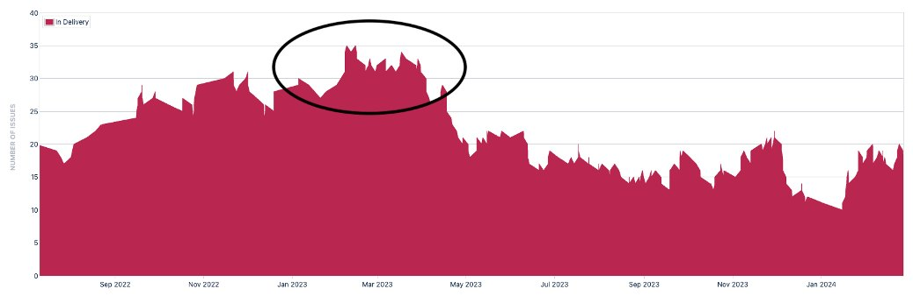
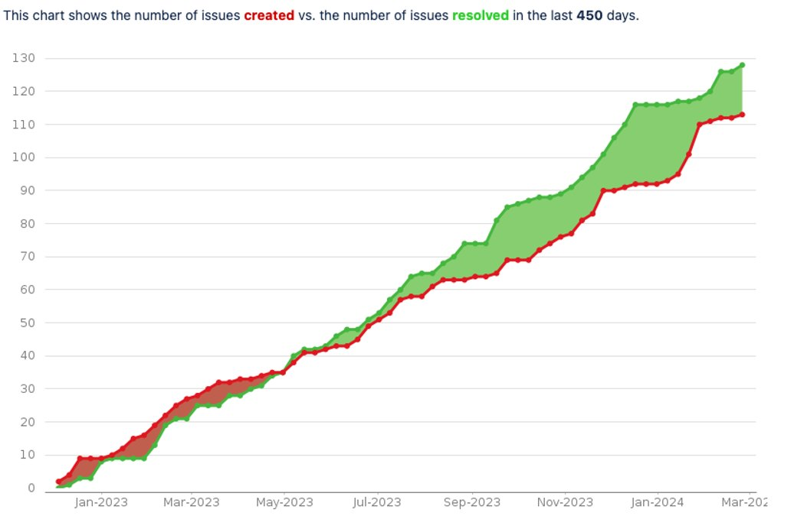
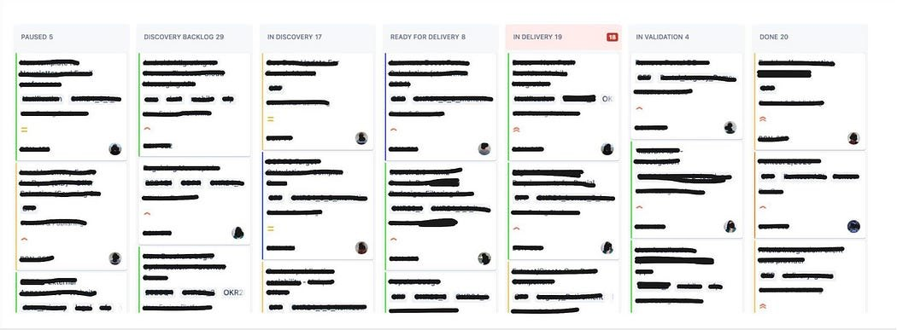

Almost doubled our productivity at scale
Summary: We implement a Work in Progress (WiP) limit at scale, capping the number of initiatives we tackle simultaneously for our Product and Development organization of 15 teams (~100 people). An initiative is similar to a ~ 3-month project. This structural change not only increased our productivity year on year but also fostered a healthier development process.
Our core belief is that by focusing on fewer initiatives simultaneously, teams work and cooperate more effectively. Achieving this required the collaborative efforts of a new generation of agile-minded individuals, clear communication to align everyone on the intent, and support from our C-level team. Implementing this approach for your organization could yield similar results, although the implementation specifics will vary.
In early 2023 we were enthusiastically starting the year with new ideas, but still carrying with us open initiatives from 2022. We experienced a traffic jam in our Product and Development organization (P&D) development process. Leading to:
- Engineers work in isolation on entire initiatives, creating pockets of knowledge and single points of failure.
- Difficulties to collaborate among teams and roles due to everyone being occupied with their tasks.
- Complex dependency management, frequent pauses, and initiative re-prioritization result in excessive context switching, slowing down progress.
These challenges left us feeling dissatisfied and hindered our progress. See below an extract of our Jira picturing the max initiatives in progress at the same time:

To address this, we implemented a change by structurally setting limits on the number of initiatives we concurrently deliver. Embracing the tried-and-tested Kanban Work in Progress limit. Spoiler: defining a WiP limit is easy, but implementing change is much harder… I’ll delve into the outcomes we’ve observed after a year of operating with it, as well as the key challenges our teams encountered along the way.
But is this working?

After a year the data from Jira Initiatives reveals positive evidence:
- As an organisation, we are effectively resolving as many initiatives as we create.
- Remarkably, we have delivered 113 initiatives in 2023, in comparison we had a total of 67 closures for 2022; a 70% increase in productivity year on year.
- Equally noteworthy is the shift towards initiatives with a smaller scope reducing our time to market.
- The WiP limit is 18 (1.5 times initiatives per team); since June 2023, we have been adhering to our commitment, never exceeding a maximum of 20 WiP initiatives, effectively focusing our efforts.
- A noticeable reduction in initiatives in the “Pause” status, meaning less context switching and reprioritization.
- For the first time, we have initiatives in the “Ready for Delivery” state, allowing us to prioritize and strategically plan our focus.
What's the theory of WiP limits?
WiP limits are markers and beyond that are enablers of collaboration. When we reach our organizational WiP limit, it signals a moment not to take on more but to look around and see what team can lend a hand in helping another team close their initiatives.
WiP limits come from lean management; it was made popular by Mary Poppendieck who built on Edwards Deming’s theory of variation (Managing the Pipeline). It explains that by limiting work in progress in your pipeline you create slack that allows variation to be absorbed (aka collaboration to happen). See in the following animation how traffic jams happen in systems not having the capacity to absorb variance.
How we made WiP limit work for our organization
The good news is that it works; however, the bad news is that it’s not without its challenges. To provide some context, I’ll briefly describe our Product & Development (P&D) flow and the Work-in-Progress (WiP) limit we’ve put into place:
- The Discovery phase focuses on identifying user needs, business opportunities, and technical feasibility.
- Delivery encompasses the implementation phase.
- Validation involves monitoring key performance indicators (KPIs) and validating the outcomes.
To manage our workload efficiently, we have implemented a WiP limit of 18 initiatives in the delivery phase, averaging approximately 1.5 initiatives per team. We have a portfolio conversation every Monday with some of our team leads, heads, product owners, CPO, and CTO to monitor our flow.

After deciding and introducing the WiP limit concept alongside the mindset of “stop starting, start finishing,” we encountered a phase of uncertainty within our organization. During this period, some individuals resisted the change, it is imperative to resist systemic inertia, and assist individuals in adapting. Here, I’ll outline some of the challenges we encountered: competency to support other teams, who moves the initiatives and when, how many initiatives per team…? and how we resolved them by collaborating with people.
My team has limited competency to support other teams
The culture of stop starting, start finishing requires a people-centered mindset. True collaboration thrives when we empower individuals to engage deeply with their work. When engineers, for instance, step out of their domain to assist another team, it’s not just about closing tasks — it’s about building relationships and understanding new domains. It takes time and we grant it.
But what happens when the path to collaboration isn’t straightforward? Consider an engineer specialized in data analytics facing the challenge of supporting a mobile development team. The skills gap might seem like a barrier. Collaboration is the goal, but it’s not the only path forward. When direct support isn’t feasible, we explore 2 other strategies:
- Scoping Down: Reducing the scope of projects can help teams cross the finish line faster, freeing up capacity for future collaboration.
- Enhancing Discovery: Diving deeper into the discovery backlog not only prepares teams for upcoming projects but also creates space for learning and growth, potentially opening new avenues for collaboration.
Who has the authority to determine the next initiative to move from "Ready For Delivery" to "Delivery" stage? How is this done?
So interesting, right? Suddenly you could potentially grant authority to a group to decide if a team can start working on an initiative and disempower your teams. We don’t want that. We communicated that the authority to move an initiative into the delivery stage lies with the delivery team. This aligns with our Leader-Leader principle. Teams are encouraged to pull initiatives into “In Delivery” to reflect their reality. We don’t want to create hidden work and don’t want to create a waiting time for approval. That said every Monday we hold discussions on aiming to align ourselves with the WiP limit during the P&D Portfolio meeting. While it makes sense to reflect reality and avoid unnecessary waiting time we ask people to ask themselves:
- Can I support someone in my team to close an initiative before starting a new one?
- Am I breaking the WiP limit if I start working on a new topic?
- Is the next topic I want to pull the most impactful one?
- Can I collaborate with my product owner in the discovery phase?
Who communicates when a delivery slot becomes avaiable?
Communication regarding the availability of a delivery slot is not centralized or formally communicated. Instead, the delivery team exercises autonomy in determining when an initiative is ready to move into the delivery stage. Embracing a mindset of “ask for forgiveness, not permission,” teams are empowered to make decisions based on their assessment of the project’s readiness and alignment with organisational goals. And every Monday we hold conversations to align ourselves with the WiP limit.
How many initiatives can be worked on simultaneously within a team?
We do not set a WiP limit at a team level, the limit is at the P&D level (1.5 initiatives per team is only a way to calculate a global WiP limit). A team itself can decide on its own WiP limit, and this applies to the domain (team of teams) as well. If a team wants to set a WiP limit, we fully support that decision as it can enhance focus and speed. You might argue: “But setting a WiP Limit to all P&D also affects and blocks teams…”. True, it is affecting teams, and not setting WIP limit as well as it encourages local efficiency over collaboration and focus. There is also in a position of a leadership team a distinction between having a general rule for the organisation that influences work and forced rules pushed within a team circle of decisions.
More ingredients that helped us on the way
A joint effort of a new generation-born agile
Reflecting on the past decade, I remember the uphill battle of educating, training, and persuading others on agile practices. Times have changed and leaders come into place that understand how to deliver value: when the P&D leadership team came together to address our slowness, the proposition of implementing WiP limits emerged, from our tech and product heads. This marked a significant shift. Tech leads rallied behind teams to facilitate the transition, while the product team streamlined initiatives into smaller batches, managing closing conversations with stakeholders.
(A lot of) communication to create clarity on the intent
It took us nearly half a year to embrace the “stop starting, start finishing” mindset. Counterintuitively, our natural inclination is often to do more to achieve more. Overcoming this required a shift in mindset — doing less at the same time leads to faster completion and ultimately greater productivity in the long run. Much of our communication centered on establishing clarity of intent. By focusing on our collective desire for a healthier working environment, improved focus, and enhanced collaboration across teams and roles, most conversations led to constructive outcomes. As people understood the concept, we were able to live up to this change. I initially underestimated the transformative impact of this change, after all, it’s just a simple two-digit number, isn’t it?
C-Level team champioing the idea
At Bonial, we are fortunate to have support from our CTO and CPO, who championed the WiP limit idea despite initial doubts. Karsten Lehmann Bonial CPO during our Monday Portfolio: “Just in general, it seems like this delivery cap of 18 initiatives really, really works well. Kudos to that. We can stick to it. I think I was one of the biggest critics in the beginning, but I must admit it seems to be helpful.”
Making it happen for you too
We aspire to cultivate an environment where teams and roles collaborate, offering mutual support, while maintaining focus to accelerate business value generation and foster quality. To materialize this, we implemented a structural mechanism: the Work in Progress (WiP) limit. Each Monday during our portfolio meeting, we diligently assess our work in progress, pondering over what adjustments are needed to stick to this delivery cap.
You can structurally shape behaviors that create a healthier working environment, it works, it’s not easy but if the intention is shared you’ll find your way.
The author: Samir Hanna works as Lead Coach at Bonial. He is deeply rooted in agile product development as well as human development and a close collaborator of the whole OrgVolution team. To avoid confusion: Samir Hanna ist not the same person as Samir Keck. 😉
Originally published on 19 September 2024 on orgvolution.de.